PartsBooking Бот
Главное меню
База данных
Логи
Выбрать Excel файл
Запустить анализ цен
Обработано —
Время работы —
ETA —
Файл не выбран
Открыть БД
CSV
Открыть фото
Сбросить БД
Опасное действие: удаляет все данные
Открыть логи
Вниз